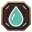
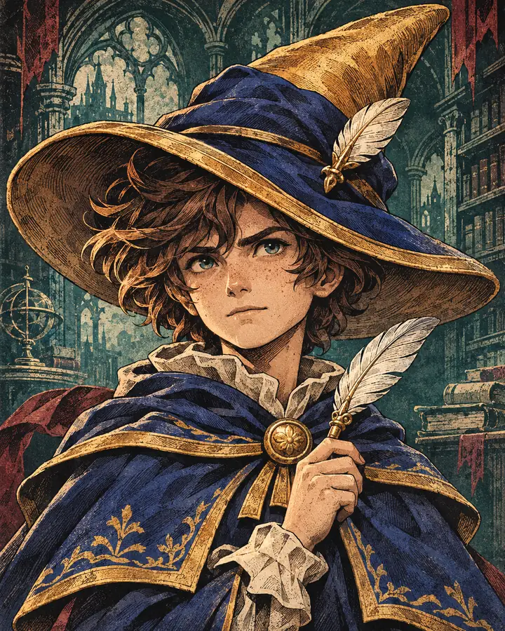
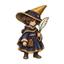

Daha geniş arena için ekranı yatay tutabilirsin.
120 / 120 HP
DALGA 1 / 100 · 25s

0 0
CİLT I
01 / 100

Inky · NormalRED PEN INQUISITOR
KARANLIK KÜTÜPHANE
Kayıp kelimeleri rafların arasından geri çağır.
ARŞİV ARASI · DALGA 05
KAYIP İSİMLER DİZİNİ
Boş fiş

ENTER / → · İLERLE
1 / 5

ARŞİV AÇILIYOR
Kayıp kelimeleri rafların arasından geri çağır.
KÂTİP ENVANTERİ · TEÇHİZAT DEFTERİ
AKTİF SİLAHLAR (Otomatik ateş)
YEDEK ÇANTA (Rezerv silahlar)
Kâtip İstatistikleri:
Can: 120 | Hasar: 1.0x | Atış: 1.0x | Zırh: %5 | Kritik: %8 | Hız: 235
HATA DEFTERİ
Sınavlarda yanlış cevaplanan kelimeler burada birikir. Bu kelimeler sonraki dalgalarda pekiştirme için önünüze tekrar çıkacaktır. Doğru cevaplandığında defterden silinir ve ekstra ödül kazandırır.
Toplam 0 kelime pekiştirilmeyi bekliyor